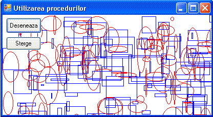
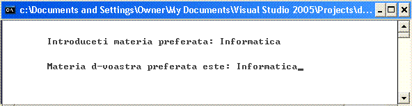
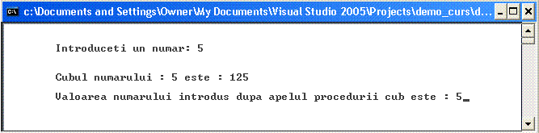
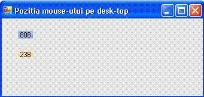

Funcţiile
şi procedurile sunt elementele de bază ale unui program scris în C++.
Orice program, de orice dimensiune, conţine una sau mai multe functii sau proceduri.
Functiile si procedurile sunt de fapt un grup de instructiuni care impreuna
executa o anumita operatie.
Exista cazuri cand trebuie sa executam de mai multe ori
o anumita operatie, operatia fiind compusa dintr-un grup de instructiuni. O
solutie ar fi inserarea grupului de instructiuni in program ori de cate ori e
nevoie. In acest caz programele devin lungi si greoaie. Solutia eleganta e
reprezentata de utilizarea functiilor si procedurilor. In majoritatea cazurilor
spre grupul de instructiuni se transmit anumiti parametri, parametri necesari
in executarea operatiei definita de grupul de instructiuni. In urma rularii
grupului de instructiuni, de cele mai multe ori rezulta valori reprezentand
rezultatul rularii instructiunilor din grupul de instructiuni. In cazul cand in
urma rularii grupul de instructiuni returneaza valori, numim acest grup de
instructiuni, functie . In cazul cand in urma rularii grupul de
instructiuni nu se returneaza valori, numim acest grup de instructiuni, procedura
. Procedurile se intalnesc de obicei in cazurile cand avem operatii de
afisare. Grupul de instructiuni folosit in general pentru diverse afisari de
date primeste date de intrare insa in urma prelucrarii lor se executa afisarea
datelor prelucrate fara ca acestea sa intoarca nici un fel de valori.
Majoritatea aplicatiilor scrise in "Windows Forms Aplication" au
necesitat completarea unor proceduri atasate unui eveniment. Prcatic o
procedura este o functie care nu intoarce valori. Vom numi atunci generic toate
grupurile de instructiuni care impreuna executa anumite operatii, functii .
Pana acum am scris programe cu o singura functie si anume functia main.
In continuare vom utiliza functii pentru a realiza programe mai compacte si mai
usor de controlat. Functiile ofera un mod convenabil de încapsulare a anumitor
calcule într-o cutie neagra care poate fi utilizata apoi fara a avea grija
continutului ei. Functiile sunt într-adevar singurul mod de a face fata
complexitatii programelor mari, permitand desfacerea programelor mari în module
mai mici, dand utilizatorului posibilitatea de a dezvolta programe, reutilizand
codul scris de alte persoane.
Limbajul C a fost conceput sa permita definirea de
functii eficiente si usor de manuit. În general e bine sa concepem programe
constituite din mai multe functii mici decat din putine functii de dimensiuni
mari.
Cand utilizam functii tinem cont ca:
- Un program poate fi împartit în mai multe fisiere
sursa în mod convenabil, iar fisierele sursa pot fi compilate separat.
- Un program C consta dintr-o secventa de definitii
externe de functii si de date.
- În fiecare program trebuie sa existe o functie cu
numele impus main.
- Orice program îsi începe executia cu functia main.
Celelalte functii sunt apelate din interiorul functiei main.
- Unele dintre functiile apelate sunt definite în
acelasi program, altele sunt continute într-o biblioteca de functii.
Definirea unei
functii
O functie este formata din antet si corp astfel:
antet_functie{corpul_functiei} |
Daca revenim la prima aplicatie scrisa observam ca de
fapt avem o singura functie si anume funcia main
// Primul program scris in C++ Visual Studio 2005 de tipul:CLR (Common Language Runtime) console application #include "stdafx.h"#include < iostream >using namespace std; int main(void){ cout <<" Primul program CLR console application\n\n Felicitari!!"; cin.get(); return 0;} |
Prima linie int main(void) este antetul functiei
(nu este urmat de ;) constand dintr-un tip de date returnat, un nume al
functiei si o lista cu argumente.
Corpul functiei se pune intre acolade si consta din
declaratii de variabile locale, una sau mai multe instructiuni printre care si
instructiuni de revenire . In cazul de sus instructiunea de revenire fiind
return 0.
O functie poate fi deci descrisa mai general astfel:
tip_val_return nume_func (lista_declaratiilor_param_ formali){declaratii_variabile_localeinstructiunireturn valoare} |
Prima
linie reprezinta antetul functiei, în care se indica: tipul functiei, numele
acesteia si lista declaratiilor parametrilor formali. La fel ca un operand sau
o expresie, o functie are un tip, care este dat de tipul valorii returnate de
functie în functia apelanta. Daca functia nu întoarce nici o valoare, în locul
tip_vali_return se specifica void. In acest caz avem de-a face cu o procedura
Daca tip_val_return lipseste, se considera, implicit,
ca acesta este int. Nume_functie este un identificator.
Lista_declaratiilor_param_formali (încadrata între
paranteze rotunde) consta într-o lista (enumerare) care contine tipul si
identificatorul fiecarui parametru de intrare, despartite prin virgula. Daca
lista parametrilor formali este vida, în antet, dupa numele functiei, apar doar
parantezele ( ), sau (void).
Corpul functiei este un bloc, care implementeaza
algoritmul de calcul folosit de catre functie. În corpul functiei apar (în
orice ordine) declaratii pentru variabilele locale si instructiuni. Daca
functia întoarce o valoare, se foloseste instructiunea return valoare. La
executie, la întâlnirea acestei instructiuni, se revine în functia apelanta.
În limbajul C/C++ se utilizeaza declaratii si definitii
de functii.
Declaratia contine antetul functiei si informeaza
compilatorul asupra tipului, numelui functiei si a listei parametrilor formali
(în care se poate indica doar tipul parametrilor formali, nu si numele
acestora).
Declaratiile de functii se numesc prototipuri, si sunt
constituite din antetul functiei, din care pot lipsi numele parametrilor
formali.
Definitia contine antetul functiei si corpul acesteia.
Nu este admisa definirea unei functii în corpul altei functii.
Prima aplicatie scrisa ar putea fi despartita in doua
functii astfel:
// Primul program care foloseste functii// Programul este scris in C++ Visual Studio 2005 de tipul:CLR // (Common Language Runtime) console application #include "stdafx.h"#include < iostream >using namespace std; // Incepe definirea functiei afiseaza void afis(void){ cout <<" \n\n\tPrimul program ce utilizeaza functii.\n\n";}int main(void){ afis(); // se apeleaza functia afis cin.get(); return 0;} |
Functia afis este definita prima astfel : void afis(void)
. Primul void inseamna ca nu returneaza o valoare, iar afis(void) inseamna ca
functia afis nu are nevoie de parametri cand se apeleaza. Corpul functiei afis
are o singura instructiune si anume cout. Nu are instructiune de revenire
return deoarece nu intoarce nici o valoare.
Tinand cont ca functia afis() nu returneaza nici un
parametru o putem numi procedura.
Prototipuri de
functii
De obicei un program incepe cu functia main(). In
aplicatia de sus este definita prima data procedura afis(), dupa care apare
functia main(). Daca schimbam locul lor programul devine:
// Primul program care foloseste functii// Programul este scris in C++ Visual Studio 2005 de tipul:CLR // (Common Language Runtime) console application #include "stdafx.h"#include < iostream >using namespace std; int main(void){ afis(); // se apeleaza functia afis cin.get(); return 0;}// Incepe definirea functiei afiseaza void afis(void){ cout <<" \n\n\tPrimul program ce utilizeaza functii.\n\n";} |
Incercand sa compilam aplicatia de sus vom obtine o
eroare deoarece in functia main() se apeleaza functia afis(), functie care inca
nu a fost definita. Solutia este sa declaram functia inaintea functiei main(),
dupa care putem pune functia main() urmata de procedura afis(). Declararea
functiilor si procedurilor se realizeaza prin utilizarea prototipurilor de
functii.
Aplicatia anterioara va rula cu conditia sa scriem
inaintea functiei main() prototipul.
// Programul foloseste functii si prototipuri functii// Programul este scris in C++ Visual Studio 2005 de tipul:CLR // (Common Language Runtime) console application #include "stdafx.h"#include < iostream >using namespace std;void afis(void);// prototipul functieiint main(void){ afis(); // se apeleaza functia afis cin.get(); return 0;}// Incepe definirea functiei afiseazavoid afis(void){ cout <<" \n\n\tProgramul utilizeaza functii si prototipuri.\n\n";} |
Prin aceasta metoda reusim sa scriem programe mai
"clare" in sensul ca la inceput se trec in revista toate functiile
prin declararea prototipurilor, urmeaza functia main(), dupa care urmeaza
definitiile functiilor declarate prin prototip
Proceduri fara
parametri
In Windows Forms Application functiile se definesc la
fel. Vom incerca sa desenam mai multe cercuri concentrice distantate la 10
pixeli. Numarul cercurilor depinde de latimea form-ului curent, astfel la
fiecare redimensionare a ferestrei sa se traseze in alt numar de cercuri
concentrice. Daca punem o singra procedura de desanare pe evenimentu
"resize" desenarea se va face numai daca redimensionam fereastra
curenta, astfel la pornirea programului nu se afiseaza nimic. Procedura trebuie
lansata si pe evenimentul paint.
Vom scrie o procedura numita desenare pe care o vom
lansa din procedurile create pe cele doua evenimente.
Procedura deseneaza arata astfel:
void deseneaza(void){ int i=0; System::Drawing::Graphics^ Desen; Desen = this->CreateGraphics(); System::Drawing::Pen^ Creion_rosu; Creion_rosu=gcnew System::Drawing::Pen(System::Drawing::Color::Red); Desen->Clear(System::Drawing::Color(this->BackColor)); i=0; for ( int i=1; i<=this->Width/4; i+=10){ Desen->DrawEllipse( Creion_rosu, this->Width/2-i, this->Height/2-30-i,2*i,2*i); } delete Creion_rosu; delete Desen; } |
Deschidem
un nou proiect numit "f_cercuri". Procedura de sus va fi adaugata
procedurilor generate la deschiderea proiectului.
Procedura va fi amplasata in zona #pragma region unde
sunt amplasate si procedurile de initializare ale componentelor
Creem proceduri pe evenimentele paint si resize.
Procedurile create pe evenimentele paint si resize vor
contine apelul procedurii de desenare adica deseneaza();
Ultima parte a codului afisat cu "view code"
va arata astfel:
void deseneaza(void){ int i=0; System::Drawing::Graphics^ Desen; Desen = this->CreateGraphics(); System::Drawing::Pen^ Creion_rosu; Creion_rosu=gcnew System::Drawing::Pen(System::Drawing::Color::Red); Desen->Clear(System::Drawing::Color(this->BackColor)); i=0; for ( int i=1; i<=this->Width/4; i+=10){ Desen->DrawEllipse( Creion_rosu, this->Width/2-i, this->Height/2-30-i,2*i,2*i); } delete Creion_rosu; delete Desen; } #pragma endregion private: System::Void Form1_Paint(System::Object^ sender, System::Windows::Forms::PaintEventArgs^ e) { deseneaza(); } private: System::Void Form1_Resize(System::Object^ sender, System::EventArgs^ e) { deseneaza(); } };} |
Dupa rularea aplicatiei se afiseaza imediat imaginea de
jos iar la redimensionarea ferestrei se redeseneasza cercurile.

In multe cazuri e necesar sa efectuam aceleasi operatii
pe mai multe evenimente. Spre exemplu in cazul in care afisam ceva intr-o
fereastra dupa apasarea unui buton, am dori sa reafisam continutul ferestrei si
dupa operatia de redimensionare a ferestrei. Vom defini deci o procedura numita
de exemplu deseneaza() pe care o apelam din porocedurile lansate pe
evenimentele dorite. Sa realizam o aplicatie in care "Form-ul"
principal contine doua butoane: "Deseneaza" si "Sterge".
Procedura deseneaza() trebuie sa se declanseze atat pe evenimentul Click al
butonului "Deseneaza" cat si pe evenimentul resize al form-ului.
Procedura "Sterge" trebuiesa se declanseze atat pe evenimentul Click
al butonului "Sterge" cat si pe evenimentul resize al form-ului.
Vom crea un nou proiect numit: functii_vo in
Windows Forms Application . Plasam doua butoane si anume button1 pentru
"Deseneaza" si button2 pentru "Sterge". Definim procedurile
deseneaza() si sterge() si le apelam pe evenimentele mai sus amintite.
Ultima parte a codului afisat cu "view code"
va arata astfel:
void deseneaza(void){ int i=0; System::Drawing::Graphics^ Desen; Desen = this->CreateGraphics(); System::Drawing::Pen^ Creion_rosu; Creion_rosu=gcnew System::Drawing::Pen(System::Drawing::Color::Red); System::Drawing::Pen^ Creion_albastru; Creion_albastru=gcnew System::Drawing::Pen(System::Drawing::Color::Blue); System::Random^ n = gcnew System::Random(); for ( int i=1; i<=100; i++){ Desen->DrawRectangle( Creion_albastru,n->Next(this->Width),n->Next(this->Height),n->Next(75),n->Next(50)); Desen->DrawEllipse( Creion_rosu, n->Next(this->Width), n->Next(this->Height), n->Next(50),n->Next(75)); } delete Creion_rosu; delete Creion_albastru; delete Desen;}void sterge(void){ System::Drawing::Graphics^ Desen; Desen = this->CreateGraphics(); Desen->Clear(System::Drawing::Color(this->BackColor));}#pragma endregion private: System::Void button1_Click(System::Object^ sender, System::EventArgs^ e) { sterge(); deseneaza(); } private: System::Void button2_Click(System::Object^ sender, System::EventArgs^ e) { sterge(); } private: System::Void Form1_ResizeEnd(System::Object^ sender, System::EventArgs^ e) { sterge(); deseneaza(); }};} |
Dupa lansarea aplicatiei si apasarea butonului
"Deseneaza" se afiseaza imaginea:

Sa incercam sa afisam forma de unda a semnalelor modulate
in amplitudine. La transmiterea undelor radio se foloseste modulatia in
amplitudine, in frecventa sau in faza pentru transmiterea la mare distanta a
undelor radio. In principiu daca vrem sa transmitem la distanta un semnal
electric de joasa frecventa trebuie sa ne folosim de un semnal de inalta
frecventa (numit purtatoare) peste care sa suprapunem semnalul de joasa
frecventa numit (modulatoare) . In cazul cand vrem sa transmitem un semnal
sinusoidal, acesta va modula un semnal purtator tot de forma sinusoidala dar de
frecventa mult mai mare. Sa afisam atunci un semnal sinusoidal modulat tot cu o
sinusoida. Trebuie sa afisam deci functia sin(mx)*sin(sp) unde xm este
frecventa undei modulatoare iar xp este frecventa undei purtatoare. De obicei
xp>>xm.
Generam un nou proiect in Windows Forms Application
numit modulatie . Plasam doua obiecte de tip NumericUpDown care vor
permite introducerea numarului de radiani pentru modulatoare respectiv factor
de multiplicare pentru purtatoare in raport cu frecventa modulatoarei, cu
numele numericUpDown1 respectiv numericUpDown2.
Cu click dreapta pe form -- aleg optiiunea View Code --
inserez urmatoarea procedura:
void sin_mod(void){ int i=0,y=0,y_v=0,lat,factor_s; double x,rad,xm,f; System::Drawing::Graphics^ Desen; Desen = this->CreateGraphics(); System::Drawing::Pen^ Creion_blu; Creion_blu=gcnew System::Drawing::Pen(System::Drawing::Color::Red); Desen->Clear(System::Drawing::Color(this->BackColor)); factor_s=this->Height/2-37; rad=System::Convert::ToDouble(this->numericUpDown1->Value); f=System::Convert::ToDouble(this->numericUpDown2->Value); lat=this->Width; do { x=i*rad*System::Math::PI/(lat-10); xm=f*x; y=35+factor_s*(1-System::Math::Sin(xm)*System::Math::Sin(x)); Desen->DrawLine(Creion_blu,i-1,y_v, i, y); y_v=y; i+=1; } while (i<=lat); delete Creion_blu; delete Desen; } |
Procedura sin_mod trebuie sa se apeleze atat la evenimentul paiant cat si
pe evenimentele ValueChanged ale celor doua butoane. Vom pune deci pe aceste
evenimente apelul procedurii sin_mod();
Dupa rularea aplicatiei obtinem:

Din cele doua butoane putem schimba frecventele celor
doua unde si acestea se redeseneaza automat.
Proceduri cu
argument (parametri)
Desi s-ar parea ca aplicatia anterioara primeste
parametri in sensul ca apeleaza aceeasi procedura sin_mod() dar afiseaza
imagini diferite in functie de valorile butoanelor NumericUpDown nu avem de-a
face cu o procedura cu argument (parametri). Argumentele (parametrii) pot fi
transmisi spre proceduri in diverse moduri. Cel mai simplu mod de transmitere a
parametrilor spre proceduri este transmiterea argumentelor (parametrilor) prin
valoare.
· Transmiterea argumentelor (parametrilor)
spre proceduri, prin valoare.
Vom folosi o functie numita afis_mes pentru a
afisa un mesaj. Textul pentru afisat este transmis ca argument procedurii.
// Programul foloseste procedura afis_mes careia i se transmit parametrii prin valoare// Programul este scris in C++ Visual Studio 2005 de tipul:CLR // (Common Language Runtime) console application #include "stdafx.h"#include < iostream >#include < string > using namespace std;void afis_mes(string);// prototipul int main(void){ string str; cout << " \n\n\tIntroduceti materia preferata: "; cin >> str; afis_mes(str); // se apeleaza procedura afis cin.ignore(); cin.get(); return 0;}// Incepe definirea procedurii afis_mesvoid afis_mes(string s){ cout <<" \n\n\tMateria d-voastra preferata este: " << s;} |
Atat
antetul cat si prototipul functiei au un singur argument. Argumentul
prototipului contine numai tipul argumentului.
Cand am definit procedura afis_mes am utilizat
atat tipul argumentului ( string ) cat si parametrul s . Aceast parametru se
numeste parametru formal sau simulat si este utilizat pentru definirea interna
procedurii. Acesta nu are semnificatie pentru programul principal. Acest
parametru formal va fi inlocuit de argumentul transmis la apelarea procedurii.
Dupa rularea programului si introducerea textulii
"Informatica" Fereastra "Command" arata astfel:

Am putea modifica functia afis_mes astfel incat
sa o putem folosi pentru a afisa orce text care a fost definit in prealabil.
// Programul foloseste procedura afis_mes careia i se transmit parametrii prin valoare// Programul este scris in C++ Visual Studio 2005 de tipul:CLR // (Common Language Runtime) console application #include "stdafx.h"#include < iostream >#include < string > using namespace std;void afis_mes(string);// prototipul int main(void){ string str; string mesaj=" \n\n\tMateria d-voastra preferata este: "; cout << " \n\n\tIntroduceti materia preferata: "; cin >> str; afis_mes(mesaj);// se apeleaza procedura afis_mes afis_mes(str); // se apeleaza procedura afis_mes cin.ignore(); cin.get(); return 0;}// Incepe definirea procedurii afis_mesvoid afis_mes(string s){ cout << s;} |
Vom realiza in continuare o aplicatie in care se
apeleaza proceduri carora li se transmit parametri prin valoare. Reluam
aplicatia cu desenarea figurilor aleatoare dar plasam niste butoane cu care
alegem numarul de figuri desenate pe ecran.
Vom crea un nou proiect numit: functii_v1 in
Windows Forms Application . Plasam patru butoane si anume: button1 pentru
"Deseneaza 100", button2 pentru "Deseneaza 200", button3
pentru "Deseneaza 500" si button4 pentru "Sterge". Definim
procedurile deseneaza() si sterge() si le apelam pe evenimentele butoanelor
definite.
Ultima parte a codului afisat cu "view code"
va arata astfel:
void deseneaza(int nr){ int i=0; System::Drawing::Graphics^ Desen; Desen = this->CreateGraphics(); System::Drawing::Pen^ Creion_rosu; Creion_rosu=gcnew System::Drawing::Pen(System::Drawing::Color::Red); System::Drawing::Pen^ Creion_albastru; Creion_albastru=gcnew System::Drawing::Pen(System::Drawing::Color::Blue); System::Random^ n = gcnew System::Random(); for ( int i=1; i<=nr; i++){ Desen->DrawRectangle( Creion_albastru,n->Next(this->Width),n->Next(this->Height),n->Next(75),n->Next(50)); Desen->DrawEllipse( Creion_rosu,n->Next(this->Width),n->Next(this->Height),n->Next(50),n->Next(75)); } delete Creion_rosu; delete Creion_albastru; delete Desen;}void sterge(void){ System::Drawing::Graphics^ Desen; Desen = this->CreateGraphics(); Desen->Clear(System::Drawing::Color(this->BackColor));}#pragma endregion private: System::Void button1_Click(System::Object^ sender, System::EventArgs^ e) { sterge(); deseneaza(100); } private: System::Void button2_Click(System::Object^ sender, System::EventArgs^ e) { sterge(); deseneaza(200); } private: System::Void button3_Click(System::Object^ sender, System::EventArgs^ e) { sterge(); deseneaza(500); } private: System::Void button4_Click(System::Object^ sender, System::EventArgs^ e) { sterge(); } private: System::Void Form1_ResizeEnd(System::Object^ sender, System::EventArgs^ e) { sterge(); deseneaza(10); }};} |
Dupa
lansarea aplicatiei si apasarea butonului "Deseneaza 100 " se
afiseaza imaginea:

· Utilizarea argumentelor multiple.
// Programul foloseste procedura afis_mes careia i se transmit parametrii multiplii prin valoare// Programul este scris in C++ Visual Studio 2005 de tipul:CLR // (Common Language Runtime) console application #include "stdafx.h"#include < iostream >#include < string > using namespace std;void afis_mes(string,string,string);// prototipul int main(void){ string univ,facult,sec; string mesaj=" \n\n\tUnde sunteti student ? "; string raspuns=" \n\n\tSunteti student la : "; afis_mes(mesaj,"","");// se apeleaza procedura afis_mes pentru afisare mesaj cout << " \n\n\tUniversitatea: "; cin >> univ; cin.ignore(); cout << " \n\tFacultatea: "; cin >> facult; cin.ignore(); cout << " \n\tSectia: "; cin >> sec; cin.ignore(); afis_mes(raspuns,"","");// se apeleaza procedura afis_mes pentru afisare raspuns afis_mes(univ,facult,sec); // se apeleaza procedura afis_mes pentru afisare univ,facult,sec cin.get(); return 0;}// Incepe definirea procedurii afis_mesvoid afis_mes(string u, string f, string s){ cout << u ; cout << " "; cout << f; cout << " "; cout << s;} |
· Transmiterea argumentelor prin referinta.
In cazul cand se doreste modificarea argumentelor in
procedura apelanta transmiterea argumentelor (parametrilor) se face prin
referinta.
Sa presupunem ca realizam o aplicatie care cere un
numar de la tastatura si apeleaza o functie care inlocuieste numarul introdus
cu cubul acestuia, dupa care afiseaza rezultatul. La revenirea din procedura
valoarea numarului introdus ramane neschimbata.
// Programul foloseste procedura cub careia i se transmite un parametru.// Dupa apelul procedurii se testeaza valoarea parametrului transmis// Programul este scris in C++ Visual Studio 2005 de tipul:CLR // (Common Language Runtime) console application #include "stdafx.h"#include < iostream > using namespace std;void cub(int);// prototipul int main(void){ int x; cout << " \n\n\tIntroduceti un numar: "; cin >> x; cub(x); cout << "\n\n\tValoarea numarului introdus dupa apelul functiei cub este : "; cout << x; cin.ignore(); cin.get(); return 0;}// Incepe definirea procedurii cubvoid cub(int nr){ cout << "\n\n\tCubul numarului : "; cout << nr; cout << " este : "; nr=nr*nr*nr; cout << nr;} |

Chiar daca schimbam numele parametrului formal din
procedura cub din nr in x , rezultatul este acelasi.
// Programul foloseste procedura cub careia i se transmite un parametru.// Dupa apelul procedurii se testeaza valoarea parametrului transmis.// Programul este scris in C++ Visual Studio 2005 de tipul:CLR // (Common Language Runtime) console application #include "stdafx.h"#include < iostream > using namespace std;void cub(int);// prototipul int main(void){ int x; cout << " \n\n\tIntroduceti un numar: "; cin >> x; cub(x); cout << "\n\n\tValoarea numarului introdus dupa apelul procedurii cub este : "; cout << x; cin.ignore(); cin.get(); return 0;}// Incepe definirea procedurii cubvoid cub(int x){ cout << "\n\n\tCubul numarului : "; cout << x; cout << " este : "; x=x*x*x; cout << x;} |
Pentru
a beneficia de o variabila definita in programul principal dar modificata de o
procedura apelata se foloseste metoda transmiterii parametrilor prin referinta.
// Programul foloseste procedura cub careia i se transmite un parametriu prin referinta// Programul este scris in C++ Visual Studio 2005 de tipul:CLR // (Common Language Runtime) console application #include "stdafx.h"#include < iostream > using namespace std;void cub(int&);// prototipul int main(void){ int x; cout << " \n\n\tIntroduceti un numar: "; cin >> x; cub(x); cout << "\n\n\tValoarea numarului introdus dupa apelul procedurii cub este : "; cout << x; cin.ignore(); cin.get(); return 0;}// Incepe definirea procedurii cubvoid cub(int& nr){ cout << "\n\n\tCubul numarului : "; cout << nr; cout << " este : "; nr=nr*nr*nr; cout << nr;} |
De
data aceasta dupa apelul procedurii valoare numarului introdus este modificata
de catre procedura.

Singura diferenta este in modul de declarare al
prototipului si antetului.
- void cub(int&);// prototipul
- void cub(int& nr) // definirea procedurii cub
Prin referinta se transmit numai acele valori care
trebuiec modificate de catre procdura. Constantele nu se trimit prin referinta.
Spre o procedura se pot trimite atat valori prin referinta cat si prin valoare.
Sa realizam acum o aplicatie care cere raza unui cerc si afiseaza aria lui. Se
va sctie o procedura numita: aria_c spre care se vor trimite constanta pi,raza
si aria. Aria se initializeaza cu 0 si va fi trimisa prin referinta pentru a
putea fi afisata la intoarcerea din procedura.
// program pentru calculul ariei cercului // se cere raza cercului si se afiseaza aria acestuia// se foloseste procedura aria_c pentru a calcula aria cercului// Programul este scris in C++ Visual Studio 2005 de tipul:CLR // (Common Language Runtime) console application #include "stdafx.h"#include < iostream > using namespace std;void aria_c(float,float,float&);// prototipul int main(void){ float pi=3.1415,r,a=0; cout << " \n\n\tIntroduceti raza cercului: "; cin >> r; aria_c(pi,r,a); cout << "\n\n\tAria cercului de raza : "; cout << r; cout << " este : "; cout << a; cin.ignore(); cin.get(); return 0;}// Incepe definirea procedurii aria_cvoid aria_c(float p,float raza, float& aria){ aria=p*raza*raza;} |
Constanta
pi poate fi trimisa si direct ca argument:
// program pentru calculul ariei cercului // se cere raza cercului si se afiseaza aria acestuia// se foloseste procedura aria_c pentru a calcula aria cercului// Programul este scris in C++ Visual Studio 2005 de tipul:CLR // (Common Language Runtime) console application #include "stdafx.h"#include < iostream > using namespace std;void aria_c(float,float,float&);// prototipul int main(void){ float r,a=0; cout << " \n\n\tIntroduceti raza cercului: "; cin >> r; aria_c(3.1415,r,a); cout << "\n\n\tAria cercului de raza : "; cout << r; cout << " este : "; cout << a; cin.ignore(); cin.get(); return 0;}// Incepe definirea procedurii aria_cvoid aria_c(float p,float raza, float& aria){ aria=p*raza*raza;} |
Functii
O procedura care returneaza valori, se numeste functie.
Argumentele functiei transmit valori unei functii apelate. Valoarile returnate
se poat folosi pentru a transmite valori functiei apelante.
· Returnarea valorilor dintr-o functie.
In programul precedent in care am folosit o procedura
pentru a calcula aria unui cerc am folosit variabila a (aria cercului, pe care
am initializat-o cu zero) transmisa prin referinta pentru a putea fi afisata la
intoarcerea din procedura. Aplicatie este oarecum fortata pentru ca ar trebui
folosita o functie spre care sa se transmita argumentele pi si raza si ea sa
returneze o valoare adica aria cercului. Vom rescrie aplicatia, folosin de data
aceasta o functie.
// program pentru calculul ariei cercului // se cere raza cercului si se afiseaza aria acestuia// se foloseste functia aria_c pentru a returna aria cercului// Programul este scris in C++ Visual Studio 2005 de tipul:CLR // (Common Language Runtime) console application #include "stdafx.h"#include < iostream > using namespace std;double aria_c(double,double);// prototipul functieiint main(void){ double r,a=0; cout << " \n\n\tIntroduceti raza cercului: "; cin >> r; a=aria_c(3.1415,r); cout << "\n\n\tAria cercului de raza : "; cout << r; cout << " este : "; cout << a; cin.ignore(); cin.get(); return 0;}// Incepe definirea functiei aria_cdouble aria_c(double p,double raza){ return p*raza*raza;} |
Sa calculam acum, sirul lui Fibonacci.
Sirul are urmatoarea structura: f(0)=0, f(1)=1,
f(n)=f(n-1)+f(n-2), daca n>1
// Se defineste si se utilizeaza functia fib// Programul calculeaza elenentul n din sirul lui Fibonacci// adica: f(0)=0, f(1)=1, f(n)=f(n-1)+f(n-2), daca n>1#include "stdafx.h"#include < iostream >#include < string > using namespace std;double fib(double n); // prototipulint main(void){ int nr; double f; cout << "\n\n\tProgramul calculeaza elementul n din sirul lui Fibonacci"; cout << "\n\n\tIntroduceri n: "; cin >> nr; f=fib(nr); cout << "\n\n\tValoarea sirului pentru n=" << nr << " este:" << f << "\n"; cin.ignore(); cin.get(); return 0;} double fib(double n) { if (n==0) return 0; if (n==1) return 1; int i; double a, b, c; a=0; b=1; for (i=2; i <= n+1; i++){ a=b; b=c; c=a+b; } return c;} |
Sa afisam acum n elemente din sirul lui Fibonacci.
Sirul are urmatoarea structura: f(0)=0, f(1)=1,
f(n)=f(n-1)+f(n-2), daca n>1
// Se defineste si se utilizeaza functia fib// Programul afiseaza n elemente din sirul lui Fibonacci // adica: f(0)=0, f(1)=1, f(n)=f(n-1)+f(n-2), daca n>1#include "stdafx.h"#include < iostream >#include < string > using namespace std;double fib(double n); // prototipulint main(void){ int i,nr; double f; cout << "\n\n\tProgramul afiseaza n elemente din sirul lui Fibonacci"; cout << "\n\n\tIntroduceri n: "; cin >> nr; cout << "\n\n"; for (i=0; i<=nr ;i++){ f=fib(i); cout << "\tf(" << i << ")= " << f << "\n"; } cin.ignore(); cin.get(); return 0;} double fib(double n) { if (n==0) return 0; if (n==1) return 1; int i; double a, b, c; a=0; b=1; for (i=2; i<=n+1; i++){ a=b; b=c; c=a+b; } return c;} |
In
aplicatiile realizate pana acum de tipul tipul:CLR console application unde am
utilizat spatiul de nume System sau in aplicatii de tipul Windows Forms Application
am utilizat de multe ori functii. Am calculat de exemplu lungimea unui cerc si
am convertit raza in double cu functia raza = System::Convert::ToDouble(
raza_s ); . In acest caz am apelat defapt o functia Convert::ToDouble(
raza_s ); definita in spatiul de nume System, careia i-am transmis raza_s
sub forma de string, iar functia intoarce raza sub forma double. Sa reluam
aplicatia de sus si sa utilizam spatiul de nume System.
// program pentru calculul ariei cercului // se cere raza cercului si se afiseaza aria acestuia// se foloseste functia aria_c pentru a returna aria cercului// Programul este scris in C++ Visual Studio 2005 de tipul:CLR // (Common Language Runtime) console application// Se utilizeaza spatiul de nume System #include "stdafx.h"using namespace System;double aria_c(double,double);// prototipul functiei int main(void){ double raza ,a; String^ raza_s; double pi= System::Math::PI; Console::Write( L"\n\n\tIntroduceti raza cercului:" ); raza_s= Console::ReadLine(); raza = System::Convert::ToDouble( raza_s ); a=aria_c(pi,raza); Console::WriteLine( "\n\n\tAria cercului de raza : "+ raza +" este: "+a); Console::ReadLine(); return 0;}// Incepe definirea functiei aria_cdouble aria_c(double p,double r){ return p*r*r;} |
Am
putea chiar sa definim constanta pi in interiorul functiei aria_c
// program pentru calculul ariei cercului // se cere raza cercului si se afiseaza aria acestuia// se foloseste functia aria_c pentru a returna aria cercului// Programul este scris in C++ Visual Studio 2005 de tipul:CLR // (Common Language Runtime) console application// Se utilizeaza spatiul de nume System #include "stdafx.h"using namespace System;double aria_c(double);// prototipul functiei int main(void){ double raza ,a; String^ raza_s; Console::Write( L"\n\n\tIntroduceti raza cercului:" ); raza_s= Console::ReadLine(); raza = System::Convert::ToDouble( raza_s ); a=aria_c(raza); Console::WriteLine( "\n\n\tAria cercului de raza : "+ raza +" este: "+a); Console::ReadLine(); return 0;}// Incepe definirea functiei aria_cdouble aria_c(double r){ double pi= System::Math::PI; return pi*r*r;} |
· Utilizarea functiilor in Windows Forms
Application .
In aplicatiile de tipul Windows Forms Application am
utilizat de multe ori functii. La calculul valorii sin(), de exemplu am
introdus linii de program de genul:
double rad2; rad2=System::Convert::ToDouble(this->numericUpDown1->Value); this->label3->Text =System::Convert::ToString(System::Math::Sin(rad2)); |
Sa
realizam o aplicatie in Windows Forms Application care afiseaza valoarea
coordonatelor stanga sus ale ferestrei principale a aplicatiei.
Deschidem un nou proiect Windows Forms Application
intitulat poz_wind si plasam 4 obiecte de tip label numite
label1..label4. Completam procedura deschisa pe evenimentul mov al Form1 cu :
this->label3->Text= System::Convert::ToString(this->Location.X); this->label4->Text= System::Convert::ToString(this->Location.Y); |
Se
apeleaza deci functia System::Convert::ToString cu
argumentul(this->Location.X) respectiv (this->Location.Y)
Functia returneaza un sir de caractere ce reprezinta
pozitia x respectiv y a coltului stanga sus a ferestei curente.
Valoare returnata de functie este atribuita atributului
text al etichetelor label3 respectiv label4 pentru a fi afisate
In urma rularii aplicatiei, obtinem:

Schimband pozitia ferestrei curente se afiseaza in mod
corespunzator pozitia ferestrei.
Sa realizam acum o aplicatie in Windows Forms
Application care afiseaza pozitia curenta a mouse-ului pe desk-top.
Deschidem un nou proiect Windows Forms Application
intitulat mouse si plasam 2 obiecte de tip label numite pozx si pozy.
Pentru a afisa pozitia x si y a mouse-ului vom face
afisarea la intervale de 0.1 secunde va trebui sa plasam si un timer.
Completam procedura deschisa pe evenimentul Tick al
timerului cu:
this->pozx->Text = String::Concat(Control::MousePosition.X); this->pozy->Text = String::Concat(Control::MousePosition.Y); |
Se
apeleaza deci functia System::Convert::ToString dar cu
argumentul(Control::MousePosition.X) respectiv (Control::MousePosition.Y)
In urma rularii aplicatiei, obtinem:

Pentru a afisa pozitia mouse-ului in cadrul ferestrei
curente, deschidem un nou proiect Windows Forms Application intitulat poz_mouse
asemanator cu aplicatia anterioara dar procedura deschisa pe evenimentul
Tick al timer-uli devine:
if((Control::MousePosition.X>=this->Location.X) &&(Control::MousePosition.X-this->Location.X<=this->Size.Width ) &&(Control::MousePosition.Y>=this->Location.Y) &&(Control::MousePosition.Y-this->Location.Y<=this->Size.Height )) { this->pozx->Text= System::Convert::ToString(Control::MousePosition.X-this->Location.X); this->pozy->Text= System::Convert::ToString(Control::MousePosition.Y-this->Location.Y); } else{ this->pozx->Text="Mouse-ul nu este in fereastra"; this->pozy->Text=""; } |
Functii recursive
O functie este numita functie recursiva daca ea se
autoapeleaza, fie direct (în definitia ei se face apel la ea însasi), fie indirect
(prin apelul altor functii). Limbajele C/C++ dispun de mecanisme speciale care
permit suspendarea executiei unei functii, salvarea datelor si reactivarea
executiei la momentul potrivit. Pentru fiecare apel al functiei, parametrii si
variabilele automatice se memoreaza pe stiva, având valori distincte. Orice
apel al unei functii conduce la o revenire în functia respectiva, în punctul
urmator instructiunii de apel. La revenirea dintr-o functie, stiva este
curatata (stiva revine la starea dinaintea apelului).
· Exemple de functii recursive
Unul dintre cele mai simple exemple de utilizare ale
functiilor recursive este functia de calcul factorial. Programul urmator
defineste si utilizeaza functia recursiva factorial.
// Se utilizeaza functii recursive// Programul calculeaza factorialul unui numar#include "stdafx.h"#include < iostream >#include < string > using namespace std;int fact(int n); // prototipulint main(void){ int nr, f; cout << "\n\n\tProgramul calculeaza factorialul unui numar"; cout << "\n\n\tIntroduceri nr: "; cin >> nr; f=fact(nr); if (f!=0){ cout << "\n\n\t" << nr << "!=" << f << "\n"; } cin.ignore(); cin.get(); return 0;} int fact(int n){ if (n<0){ cout><<"\n\n\tArgument negativ!\n"; return 0; } else if (n==0) return 1; else return n*fact(n-1);} |
Sa calculam acum, utilizand functii recursive,
elementul n din sirul lui Fibonacci. Dupa cum se stie, sirul are urmatoarea
structura:
f(0)=0, f(1)=1, f(n)=f(n-1)+f(n-2), daca n>1
// Se utilizeaza functii recursive// Programul calculeaza elementul n din sirul lui Fibonacci// f(0)=0, f(1)=1, f(n)=f(n-1)+f(n-2), daca n>1#include "stdafx.h"#include < iostream >#include < string > using namespace std;double r_fib(double n); // prototipulint main(void){ int nr; double f; cout << "\n\n\tProgramul calculeaza elementul n din sirul lui Fibonacci"; cout << "\n\n\tIntroduceti n: "; cin >> nr; f=r_fib(nr); cout << "\n\n\tValoarea sirului pentru n=" << nr << " este:" << f << "\n"; cin.ignore(); cin.get(); return 0;} double r_fib(double n) { if (n<0) return 0; if (n==0) return 0; if (n==1) return 1; double i1=r_fib(n-1); double i2=r_fib(n-2); return i1+i2; } > |
Sa afisam acum, utilizand functii recursive, n elemente
din sirul lui Fibonacci.
// Se defineste si se utilizeaza functia recursiva r_fib// Programul afiseaza n elemente din sirul lui Fibonacci // adica: f(0)=0, f(1)=1, f(n)=f(n-1)+f(n-2), daca n>1#include "stdafx.h"#include < iostream >#include < string > using namespace std;double r_fib(double n); // prototipulint main(void){ int i,nr; double f; cout << "\n\n\tProgramul afiseaza n elemente din sirul lui Fibonacci"; cout << "\n\n\tIntroduceri n: "; cin >> nr; cout << "\n\n"; for (i=0; i<=nr ;i++){ f=r_fib(i); cout << "\tf(" << i << ")= " << f << "\n"; } cin.ignore(); cin.get(); return 0;} double r_fib(double n) { if (n<0) return 0; if (n==0) return 0; if (n==1) return 1; double i1=r_fib(n-1); double i2=r_fib(n-2); return i1+i2; } > |
Vizibilitatea si
durata de viata a unei variabile
Odata cu aparitia mai multor functii intr-un program se
pune problema vizibilitatii si duratei de viata a variabulelor definite in
diferite functii inclusiv in cadrul functiei main .
· Variabile locale
Sa reluam aplicatia pentru calcularea ariei cercului
dar sa o modificam astfel incat programul sa se reia atata timp cat se
introduce o valoare diferita de 0 pentru raza cercului. Vom introducem o
variabila nr_rel care contorizeaza numarul de reluari pentru a putea afisa
pentru a cate-a ora se reia aplicatia:
// program pentru calculul ariei cercului // se cere raza cercului si se afiseaza aria acestuia// programul se reia pana se introduce valoarea 0 pentru raza// se folseste variabila locala nr_rel pentru a afisa numarul de reuari ale aplicaiei #include "stdafx.h"using namespace System;double aria_c(double);// prototipul functiei int main(void){ int nr_rel=1; double raza ,a; String^ raza_s; do { Console::WriteLine( "\n\n\tApelarea nr : "+ nr_rel); Console::Write( L"\n\tIntroduceti raza cercului ( 0 pentru iesire):" ); raza_s= Console::ReadLine(); raza = System::Convert::ToDouble( raza_s ); a=aria_c(raza); Console::WriteLine( "\n\n\tAria cercului de raza : "+ raza +" este: "+a); //Console::ReadLine(); nr_rel++; } while (raza !=0); return 0;}// Incepe definirea functiei aria_cdouble aria_c(double r){ double pi= System::Math::PI; return pi*r*r;} |
In cazul in care am incrementa valoarea variabilei locale nr_rel, adica functia
aria_c devine:
// Incepe definirea functiei aria_cdouble aria_c(double r){ double pi= System::Math::PI; nr_rel++; return pi*r*r;} |
La
compilare ar aparea o eroare pentru ca variabila nr_rel nu este definita in
cadrul functiei aria_c ci este definita in functia main. Cu alte cuvinte variabila
nr_rel este o variabila locale iar domeniul sau de vizibilitate se rezuma la
functia main.
Pentru ca variabila nr_rel sa fie vazuta atat in
functia main cat si in functia calc_c, ea va trebui sa fie definita inaintea
functiei main deci ea sa fie o variabila de tip global
· Variabile globale
O variabila de tip global are vizibilitate pe tot
intreg parcursul programului. Aplicatia de sus va fi modificata, si va fi
folosita variabila globala nr_rel pentru a fi accesata atat din functia main
cat si din functia aria_c.
// program pentru calculul ariei cercului // se cere raza cercului si se afiseaza aria acestuia// programul se reia pana se introduce valoarea 0 pentru raza// se folseste variabila globala nr_rel pentru a afisa numarul de reuari ale aplicaiei #include "stdafx.h"using namespace System;double aria_c(double);// prototipul functieiint nr_rel=1; int main(void){ double raza ,a; String^ raza_s; do { Console::WriteLine( "\n\n\tApelarea nr : "+ nr_rel); Console::Write( L"\n\tIntroduceti raza cercului ( 0 pentru iesire):" ); raza_s= Console::ReadLine(); raza = System::Convert::ToDouble( raza_s ); a=aria_c(raza); Console::WriteLine( "\n\n\tAria cercului de raza : "+ raza +" este: "+a); //Console::ReadLine(); } while (raza !=0); return 0;}// Incepe definirea functiei aria_cdouble aria_c(double r){ double pi= System::Math::PI; nr_rel++; return pi*r*r;} |
Variabilele
globale au avantajul ca sunt vizibile in tot programul dar au dezavantajul ca
trebuie tinuta evidenta stricta a lor pentru a se evita modificarea lor in
diverse functii. Pentru programele mari, operatia devine destul de dificila.
· Variabile locale statice
Durata de viata a unei variabile, este data de domeniul
sau de vizibilitate, durata de viata a unei variabile locale se inchei odata cu
functia. O variabila glogala are vizibilitate in tot programul deci se
pastreaza pe toata durata programului. Variablele locale statice au
vizibilitatea variabilelor locale dar durata de viata ete durata de viata a
variabilelor globale. Variablele locale statice se declara in interiorul unei
functii dar sub forma static nume_variabila. Aplicatia anterioara se
rescrie astfel:
// program pentru calculul ariei cercului // se cere raza cercului si se afiseaza aria acestuia// programul se reia pana se introduce valoarea 0 pentru raza// se folseste variabila locala statica nr_rel pentru a afisa numarul de reuari ale aplicaiei #include "stdafx.h"using namespace System;double aria_c(double);// prototipul functiei int main(void){ double raza ,a; String^ raza_s; do { Console::Write( L"\n\tIntroduceti raza cercului ( 0 pentru iesire):" ); raza_s= Console::ReadLine(); raza = System::Convert::ToDouble( raza_s ); a=aria_c(raza); Console::WriteLine( "\tAria cercului de raza : "+ raza +" este: "+a); //Console::ReadLine(); } while (raza !=0); return 0;}// Incepe definirea functiei aria_cdouble aria_c(double r){ double pi= System::Math::PI; static int nr_rel=1; Console::WriteLine( "\n\n\tLa apelarea nr : "+ nr_rel); nr_rel++; return pi*r*r;} |
|